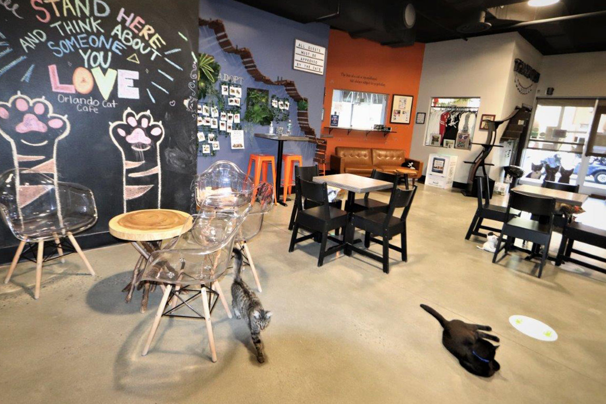

Bine ați venit la Purrfect Haven Cat Café, o combinație unică între un mediu de cafenea confortabil și un paradis plin de joacă pentru pisici, situat în inima Bucureștiului, România.
Misiunea noastră este de a oferi un spațiu confortabil și plăcut pentru iubitorii de pisici să se relaxeze, să interacționeze cu pisici prietenoase și să se bucure de băuturi și gustări de calitate.
Viziunea noastră este de a deveni principala destinație a Bucureștiului pentru relaxare și interacțiunea cu pisicile, promovând bunăstarea animalelor și legăturile cu comunitatea.
Imaginați-vă savurând cafeaua preferată în timp ce sunteți înconjurat de pisici jucăușe și afectuoase! Cafeneaua noastră oferă această experiență unică, având ca scop crearea unui mediu terapeutic și relaxant pentru oaspeții noștri.
Ce ne diferențiază este angajamentul nostru de a crea un mediu terapeutic în care clienții noștri să se poată bucura de timp de calitate cu pisicile, împreună cu cafea și gustări de înaltă calitate.
Vizitați-ne la locația noastră centrală din București și faceți parte dintr-o experiență de cafenea cu totul specială. Bucurați-vă de evenimentele noastre speciale, cum ar fi zilele de adopție a pisicilor, și deveniți parte din comunitatea noastră vibrantă.
Bunăstarea felinelor noastre este pe primul loc, așa că vă rugăm sa le respectați când veniți în vizită :) Avem câteva reguli de bună purtare cu ele și va rugăm să țineți cont de ele:
Ne rezervăm dreptul de a ne selecta clientela. Toți iubitorii de animale sunt bineveniti.
Vedere din interiorul Purrfect Haven Cat Café
